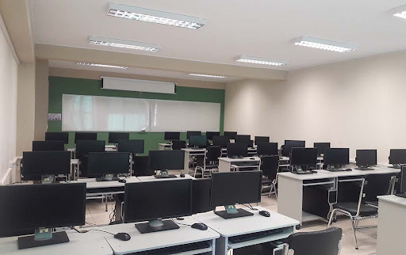
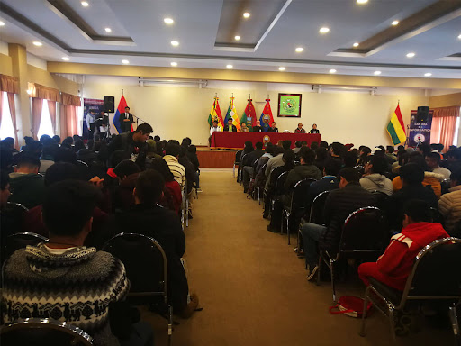

Proyecto Bootstrap

La Carrera de Informática fue creada en 1973, como una mención del Departamento de Matemáticas; el 15 de octubre de 1984 se independiza administrativamente de éste, convirtiéndose posteriormente en Carrera de Informática,con aproximadamente 300 alumnos.
EXISTEN 7 MENCIONES CON LA NUEVA MALLA CURRICULAR
Mencion Desarrollo de Software e Innovacion Tecnologica
Mencion IA y Ciencia de Datos
Mencion Ciencias de la Computacion
Mencion Informatica Industrial
Mencion Ingenieria de Sistemas
Mencion Redes y TIC
Mencion Seguridad de la Informacion



!!!ADELANTE INFORMATICA!!!
Formar profesionales idóneos con calidad humana, ética, valores, excelencia científica, compromiso social, capacidad crítica y creativa para potenciar el desarrollo de la ciencia y la tecnología en el área de la Informática en concordancia con los requerimientos de la sociedad y sus instituciones, desempeñándose con éxito en el ámbito regional, nacional e internacional.
Ser la unidad académica líder a nivel nacional y un referente de alto nivel en la formación de profesionales del área de la Informática, que aporta a la región y el país no solo con sus graduados sino también con proyectos de investigación y extensión de alto impacto relacionados con ciencia y tecnología.
Formar profesionales altamente calificados en ciencia y tecnología del área de la Informática para responder a las necesidades de la sociedad.
Conducir proyectos de Investigación científica en el área de la Informática.
Conducir proyectos de Interacción social en la región y el país.